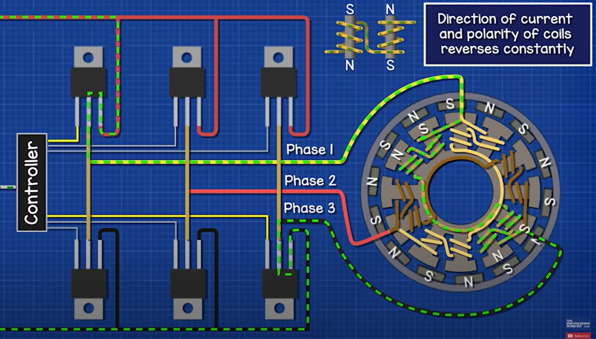
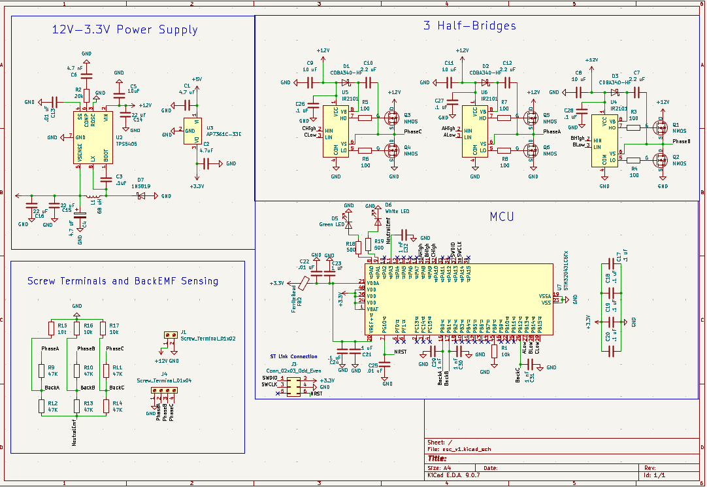
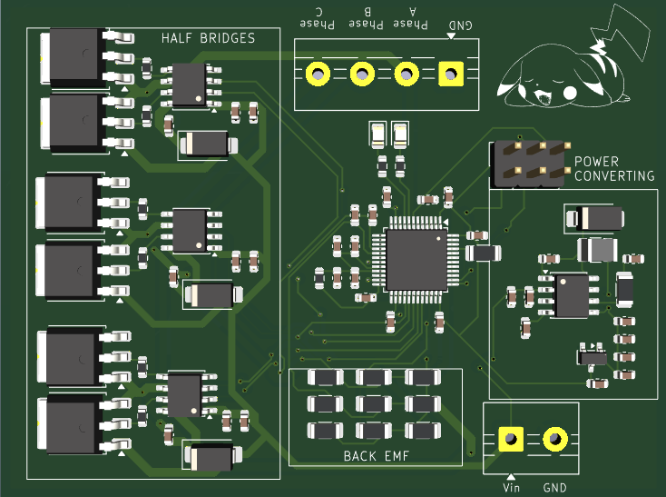

Okay, awesome, you have a brushless dc motor now and you want to power it (see my brushless dc motor page to see more about them). Sadly, a brushless dc motor can't just recieve power and boom it turns on. This is due to you needing to power different phases at different times. Looking at the image to the right you can see there are 3 different phases to be powered. You use mosfets to create something called a half bridge which allows you to power a low side and a high side, meaning one phase will have power sent through it, and the other phase will have out of it. This creates one phase to be connected to VCC, and the other phase connected to ground. The electricty through the phases will cause the magnets to repel or attract to the coils. Once the magnents start to align, you switch which mosfets you drive. The three half bridges made with the mosfets allow you to switch between the 6 different ways you can have high side/low side configurations.
So there are three main parts of an ESC, power converting (like any board that has logic and non-logic voltage), half bridges to handle phase switching, and back emf sensing components. The power converting consists of takin in 12V from a DC power supply, which then has a buck convertor drop the 12V to 5V. In order to ensure extra clean power (helpful for ADC pins I am using), I also use an LDO to drop voltage from 5 to 3.3V. The half bridge set up uses a driver IC to power the mosfet gates. This is needed as the high side mosfet gate needs a higher voltage than the supply voltage. Each half bridge has two mosfets, one for high side, and one for low side. The last part of ESC is the back EMF sensing resistors. This part of the board is just voltage and current dividers that recieve voltage from the motor, and sends that voltage to the STM32. I will explain what back EMF is below.


Back EMF (counter-electromotive force) is the voltage generated from unpowered coils on the motor. Going back to when I was saying that at any time one phase is the high side and one phase is low side, well that leaves one phase unpowered completely. As the magents move across the unpowered coils, that generates a voltage. Using that voltage we can know where the motor is, and use that information to find out when to switch phases. Typically, this switching is done 30 electrical degrees after the floating phase voltage becomes equal to the neutral EMF we also measure.
I am happy to talk to you about any of my projects, or even if you think I can
answer some questions to help you on your own, I am more than happy to help